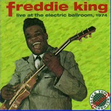

 Фредди Кинг был настоящим гигантом блюза, буквально и фигурально. На концертах этот двухметровый дервиш с гитарой поражал своим магнетизмом, сопровождая свой эмоциональный вокал и пронзительный звук гитары безумными кругами по сцене, и обычно заканчивал выступление взмокшим насквозь. Он яростно соревновался с другими музыкантами, не оставляя у слушателей никаких сомнений в том, что они видели живую легенду. (Эрик Клэптон говорил своему биографу Рэю Колмену, что для него играть на одной сцене с Фредди Кингом было интереснее, чем с кем-либо другим.) Но музыка Кинга для собратьев-музыкантов была гораздо важнее и гораздо долговечнее чем его эффектное шоу для слушателей в клубах. Впервые он стал известен благодаря серии инструменталов с ритм-энд-блюзовым звучанием, в фокусе которых был его яркий, виртуозный гитарный стиль. Эти синглы, выходившие на лейбле Federal, ненадолго сделали его самым коммерчески успешным музыкантом в блюзе. И американские современники Кинга и британские его последователи, как, например, Клэптон, Джон Майалл и Стэн Вебб, надолго попали под влияние его музыки. Успехи “питомцев” Кинга в конце 60-х помогли ему вернуться на сцену. Его поздние альбомы являются сплавом блюза и рока, популярными среди поклонников обоих жанров. К сожалению, нам уже не узнать, какие плоды могли дать его эксперименты с фанком и фьюжн. 29 декабря 1976 года, в возрасте сорока двух лет, Фредди Кинг скончался.Третьего сентября 1934 года в Гилмере, Техас, у Дж.Т.Крисчена и Эллы Мэй Кинг родился мальчик, которого назвали Фредди. Ни Би Би Кинг, ни Альберт Кинг не были его родственниками, хотя первый несомненно на него повлиял, а второй утверждал, что приходится Фредди сводным братом. С гитарой Фредди познакомили его мать и его дядя, Леон Кинг, начавший учить шестилетнего мальчика. Его первым инструментом был акустический Сильвертон, затем гитара марки Кей, а после покупки первого Гибсона Фредди ни на чем другом уже больше не играл. В декабре '50-го их семья переехала в Чикаго, где подросток устроился работать на сталелитейный завод. Но он никогда не забывал про музыку. В интервью с Брюсом Иглоером в '71-м году он рассказывал: “Когда я закончил школу, мы уехали из Техаса; мне было шестнадцать. Мы жили прямо возле клуба Занзибар, и я познакомился с Мадди Уотерсом. Я проскальзывал в заднюю дверь – Мадди меня впускал – и сидел у сцены, слушал. Тогда там играли Джимми Роджерс, Мадди, Элгин и Литтл Уолтер, вся их группа.” Общение с музыкантами клубов чикагского Вест Сайда и детские воспоминания о Блайнд Лемон Джефферсоне и Мерси Ди Валтон, слышанных в Техасе, дали Кингу всестороннее представление о блюзе, от корней до более городского, резкого звучания. “Когда я работал в Чикаго, я впервые стал играть в группе.” – говорил он в интервью, упоминавшемся выше, – “Но на гитаре я играл с шести лет. Мой стиль – он где-то посредине между Лайтнин Хопкинсом или Мадди Уотерсом и Би Би Кингом и Ти Бон Уокером. Промежуточный стиль, понимаешь? Я и по-старому играю, и по-городскому.” Фредди отыграл во многих группах, и чужих, и своих, и к 1958-му году оставил изматывающую работу сталелитейщика навсегда. Его отличительной особенностью был его гитарный стиль, который он сам называл “heavy hand attack” (игра тяжелой рукой). Он избегал слайда и играл попеременно пластиковыми и стальными медиаторами, а звук регулировал, глуша струны тыльной стороной ладони. В результате, его гитарный саунд был легко узнаваемым и одновременно уникальным. Кинг начал играть в местных ночных клубах с разными группами, пока не основал собственную. Она называлась The Every Hour Blues Boys, и вместе с Кингом в ней играл Джимми Ли Робинсон. Позже Кинг играл в группе гармошечника Литтл Сонни Купера и в Earlee Payton’s Blues Cats (Пейтон тоже играл на губной гармошке). С этими группами он впервые попал в студию. Их записи вышли на маленьком лейбле Parrot в '53 и '54. Когда Parrot разорился, один из совладельцев основал новую компанию El-Bee, и записал дебютный сингл Фредди Country Boy/That’s What You Think, прошедший незамеченным. В это же время Кинг записывался для компании Cobra (на которой, например, вышли первые записи замечательного блюзмена Отиса Раша – Otis Rush), но этот материал никогда не был выпущен. Знаменитый блюзовый лейбл Chess отказался от контракта с Кингом, посчитав, что он звучит слишком похоже на своего однофамильца Би Би. Впрочем, Фредди работал на Chess как сессионщик. Тем временем, благодаря неутомимой игре в клубах, репутация Фредди росла, и вскоре, по рекомендации пианиста Сонни Томпсона, Кингу предложила контракт компания Federal. Его первая сессия для этой компании, состоявшаяся 26 августа 1960-го года, задала тон всем его последующим записям. Она проходила в Цинциннати, куда Кингу пришлось приехать, оставив свою группу в Чикаго. Вместо них Кинг записывался с такими студийными асами, как Билл Виллис на басу, Филипп Пол на ударных и вышеупомянутый Сонни Томпсон на пианино. Тогда же вдвоём с Томпсоном они написали самую известную вещь Кинга, инструментал, названный в честь клуба, где Кинг часто играл: Hide Away (Убежище). Это была настоящая энциклопедия блюзовых риффов, позаимствованных у Хаунд Дог Тейлора, Джимми МакКраклина (The Walk), голливудского композитора Генри Манчини (The Peter Gunn Theme – известнейшая тема к фильму, версии которой записывали все, от сёрфера Duane Eddy до прогрессивщиков Emerson, Lake & Palmer) и, вдобавок, включавшая пониженный аккорд, которому Кинг научился у своего приятеля Роберта Локвуда. Hide Away имел сногсшибательный успех, взлетев до пятого места в ритм-энд-блюзовых чартах и двадцать девятого – в Billboard’s Top 40. Эта вещь стала необходимой частью репертуара групп, игравших в барах и клубах. “Если ты не знал, как играть Hide Away,” - вспоминает Джимми Воэн, брат Стиви Рэя, - “можно было сразу идти домой вместе со своей гитарой.” Вдобавок, Кинг, совершенно того не желая, заработал репутацию инструменталиста. “Все словно забыли про вокал,” – вспоминал он позже, - “и я продолжал записывать инструменталы. Они и вправду думали что я не умею петь, знаешь – они думали что я гитарист и всё.” (При этом классическая версия песни Have You Ever Loved A Woman? спета именно Фредди и была записана на той же сессии, что и Hide Away.) Тогдашняя американская мода на гитарные инструменталы, порожденная the Ventures и уже упоминавшимся Duane Eddy, превратила все шесть синглов, записанных в 1961-м году, в хиты. Многие из тогдашних записей Кинга вслед за Hide Away пополнили 'золотой фонд' блюза: Magic Сэм и Альберт Кинг исполняли San-Ho-Zay, Питер Грин и Дейв Эдмундс записали по версии The Stumble, а юный Мик Тейлор впервые блеснул с Джоном Майалом на Driving Sideways. А посмертный альбом Стиви Рэя Воэна In The Beginning, записанный на концерте 1980-го года в Остине, открывается версией I’m Tore Down, которую Воэн превратил в настоящий tour de force блюзовых риффов. За шесть лет на Federal Кинг записал около сотни композиций, в основном без вокала, с такими, например, абсурдными названиями, как The Bossa Nova Watusi Twist или Surf Monkey. Фредди назвал только два из своих инструменталов: Hide Away и Just Pickin’. Остальные названия придумывали менеджеры компании, пытавшиеся выжать побольше денег из моды на сёрф, гавайскую и бразильскую музыку и т.п. Это назойливое руковождение в конце концов вынудило Фредди разорвать контракт с компанией: “Почему я перестал работать с ними… Два года я нигде не записывался, а зарабатывал только концертами… Да потому что они меня заставляли делать что они говорят! У них там есть канцелярская крыса, он сидит целый день за столом, пока ты играешь для людей. Короче, он сидит там, ничего не видит – ни как люди танцуют, ни как они реагируют на то, что ты играешь; ты приходишь на запись, а он тебе: 'Играй вот это!' Нравится, не нравится – играй. К чёрту их!” Негодование Кинга объяснялось, вдобавок, тем, что лейбл вкладывал все деньги в рекламу своего самого коммерчески успешного музыканта – Джеймса Брауна (соул/фанк), не заботясь об остальных. Молодой музыкант Фредди слышал множество историй о том, как компании 'надувают' его коллег, поэтому всю жизнь к деловым отношениям с устроителями концертов и с фирмами звукозаписи он относился очень осторожно, и никогда не стеснялся, если чувствовал, что с ним обращаются хуже, чем он заслуживает. В '63-м он переехал в Даллас, потакая своему пристрастию к охоте и рыбалке. “Я вырос в большом городе, города – это прикольно. Но мне нравятся открытые пространства, я люблю открытый воздух. Такой уж я человек.” Кинг продолжал регулярно играть в клубах, но без новых записей его постепенно стали забывать. Несколько лет, по его словам, “как-то ничего у меня не шло.” Но 'Британское вторжение' вызвало новый интерес к блюзу в Америке, и Фредди вернулся на публику. Cream с Эриком Клэптоном, Джон Майалл и такие группы как Chicken Shack (с которыми Кинг играл на своём первом туре по Англии в октябре '67) возродили его музыку. Кинг (поменявший написание своего имени с Freddy на Freddie) заключил новый контракт с лейблом Cotillion в '68-м году и записал два альбома, спродюссированных легендарным саксофонистом Кингом Кёртисом. Фредди надеялся, что Кёртис сможет воссоздать живое звучание на пластинке, но результаты первой записи, выпущенной под названием Freddie King Is A Blues Master, его разочаровали. Гитара Кинга 'утонула' в миксе, а студийные музыканты, наоборот, были на первом плане. Следующая запись для этой компании, My Feeling For The Blues (’69) оказалась последней. В 1971-м году Кинг начал работать с компанией Shelter, основанной рок-музыкантом Леоном Расселом (Leon Russell) и продюсером Денни Корделлом. Три альбома, записанных для Shelter – Getting Ready (’71), Texas Cannonball (’72) и Woman Across The River (’73) – были продуктом не только Кинга, но и Рассела. Рассел написал значительную долю материала, и тот роковый саунд, которым отличались эти записи, тоже, безусловно, был его работой. Но, несмотря на роковый контекст, эти альбомы – настоящий блюз. Почти половина записей Кинга на Shelter – версии классики жанра, принадлежащей перу его учителей и коллег. Замечательно исполненные Key To The Highway Брунзи и Dust My Broom Элмора Джеймса с первого альбома отдают дань отцам-основателям блюза, а версии песен Лоуэлла Фулсона, Хаулин Вулфа и Литтл Милтона – знак уважения Кинга к его современникам. Рассел/Кинг оказались удачными партнёрами: эти альбомы имели большой успех и у блюзовой, и у роковой аудитории. А одна из песен, написанная Доном Никсом (Don Nix) и Расселом для Кинга – Going Down – заняла место Hide Away в финалах концертов. Вдохновлённое Литтл Ричардом маниакальное фортепиано, пульсирующий бас и, конечно, жалящие соло Кинга превратили Going Down в блюзовый стандарт. На совместном туре '89-го года Джефф Бек и Стиви Рэй Воэн заканчивали каждый концерт этой песней – дуэтом, который каждый раз превращался в дуэль. К сожалению, Shelter просуществовал недолго и в 1974-м году Фредди вновь поменял компанию. По подсказке своего нового друга и 'ученика' Эрика Клэптона, Кинг заключил контракт с RSO. Страхи блюзовых пуристов, критиковавших предыдущие альбомы Кинга за слишком коммерческое звучание, оправдались наихудшим образом: на альбомах Burglar (’74) и Larger Than Life (’75) музыкальное содержание частенько терялось за помпезными аранжировками. Следует заметить, однако, что в последние годы жизни на концертах Фредди играл совсем иную музыку, чем в студии, оставаясь верным блюзу. Студийные же записи этого периода имеют больше общего с соулом, фанком и роком. Нам уже не узнать, как бы он разрешил эти противоречия: после рождественского концерта в Далласе в 1976 Фредди почувствовал себя плохо и попал в госпиталь, где 28 декабря скончался от язвенного кровотечения и гепатита. Это была внезапная, неожиданная смерть всего в 42 года. Джозеф Ф. Ларедо, с Complete Shelter Recordings, |